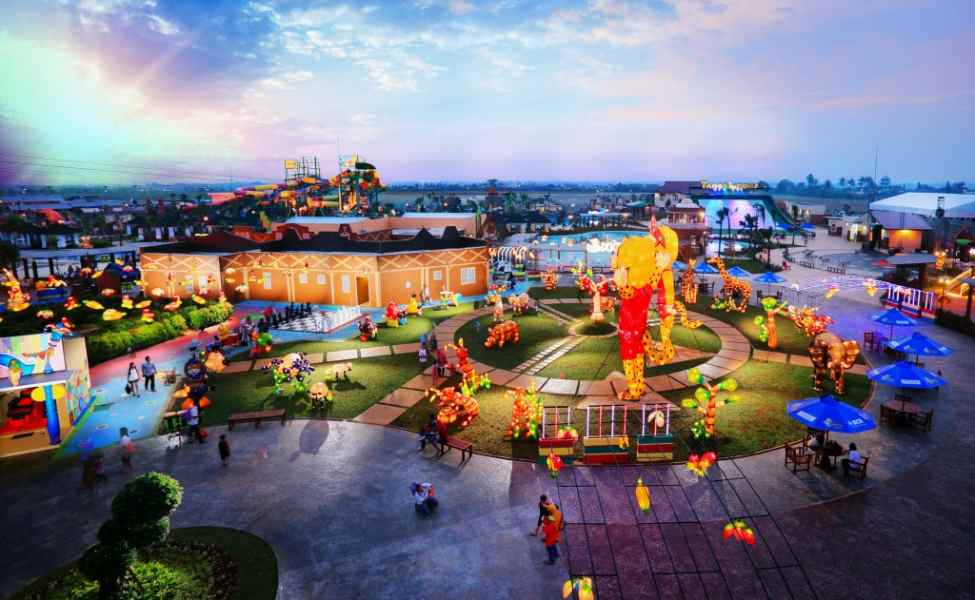

Sejarah
Menurut para ahli sejarah dan fisiologi, letak Dayeuh Sundasembawa atau Jayagiri sebagai ibu kota Tarumanagara
adalah di wilayah Bekasi sekarang. Dayeuh Sundasembawa inilah daerah asal Maharaja Tarusbawa (669–723 M)
pendiri Kerajaan Sunda dan seterusnya menurunkan Raja-raja Sunda sampai generasi ke-40 yaitu Ratu Ragumulya
(1567–1579 M).
Wilayah Bekasi tercatat sebagai daerah yang banyak memberi informasi tentang keberadaan Tatar Sunda pada masa
lampau. Di antaranya dengan ditemukannya 4 prasasti yang dikenal dengan nama Prasasti Kebantenan. Keempat
prasasti ini merupakan keputusan dari Sri Baduga Maharaja (Prabu Siliwangi, Jaya Dewa) yang ditulis dalam 5
lembar lempeng tembaga.
Geografis
Wilayah Kota Bekasi dialiri 3 sungai utama yaitu Sungai Cakung, Kali Bekasi, dan Kali Sunter, beserta
anak-anak sungainya. Kali Bekasi berhulu di pertemuan dua sungai yaitu Sungai Cikeas dan Sungai Cileungsi yang
berasal dari gunung pada ketinggian kurang lebih 1.500 meter dari permukaan air.
Wilayah Kota Bekasi secara umum tergolong pada iklim muson tropis (Am) dengan tingkat kelembapan yang tinggi
yakni sebesar ±78%. Kondisi lingkungan sehari-hari sangat panas. Hal ini terlebih dipengaruhi oleh tata guna
lahan yang meningkat terutama industri atau perdagangan dan permukiman. Suhu udara harian diperkirakan
berkisar antara 24 °C–33 °C. Oleh karena wilayahnya yang beriklim muson tropis, Kota Bekasi mengalami dua
musim, yaitu musim penghujan dan musim kemarau.
Wisata
Kota Bekasi menyimpan banyak pesona wisata yang jarang diketahui orang. Yuk, Intip berbagai pilihan wisata
kota Bekasi paling populer berikut ini.
Transera Waterpark

Jalan-jalan di Bekasi ternyata rasanya bisa seperti sedang di luar negri! Memiliki keunikan tersendiri,
Transera Waterpark menghadirkan nuansa eksotis khas Afrika di area wisatanya. Jadi, pengalaman bermain air
di sini tidak bisa kamu dapatkan di tempat lain.
Hutan Kota Patriot Bina Bangsa
Di tempat wisata kota Bekasi ini, kita bisa berpiknik bersama keluarga, bermain sepeda, atau berolahraga
jogging di bawah rindangnya pohon.